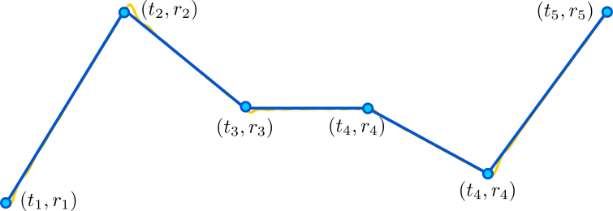

- profile_closed(system, timevalues=[0, 50, 100, 150], refvalues=[40, 50, 60, 70])
Executes a closed-loop profile response experiment for a thermal system.
The reference signal is defined by the user as a series of edges represented by pairwise points \((t_i, r_i)\), where each point specifies a time \(t_i\) and its corresponding reference value \(r_i\). Throughout the experiment, the output temperature, control input, and time are dynamically plotted and recorded.
The following figure illustrates how to define a profile reference for this function:
- Parameters:
system (ThermalSystemIoT) – The IoT-enabled thermal system object to perform the closed-loop profile experiment.
timevalues (list) – A list of time points \([t_1, t_2,\dots, t_n]\) (in seconds) defining the edges of the user-defined reference signal.
refvalues (list) – A list of reference values \([r_1, r_2,\dots, r_n]\) corresponding to each point in timevalues.
- Returns:
t (list of floats) – The recorded time points (in seconds) during the experiment.
r (list of floats) – The reference setpoints (in degrees Celsius) applied during the experiment.
y (list of floats) – The output temperatures (in degrees Celsius) recorded during the experiment.
u (list of floats) – The control input values (as a percentage of 2.475 W) applied to the system.
Notes
The experiment visualizes the step response in real-time, plotting both the temperature (output) and control input values as the experiment progresses.
Data collected during the experiment is saved in CSV format at: /experiment_files/Thermal_profile_closed_exp.csv.
- Raises:
TimeoutError – Raised if the connection with the system is lost during the experiment.
Example
First, ensure the unthermal package is imported, and a thermal system object is defined:
>>> import unthermal as ter >>> my_system = ter.ThermalSystemIoT(plant_number="XXXX", broker_address="192.168.1.100")
Next, execute the closed-loop profile response experiment:
>>> t_values = [0, 40, 80, 120, 160, 200] >>> r_values = [40, 70, 55, 55, 45, 70 ] >>> t, r, y, u = ter.profile_closed(my_system, timevalues=t_values , refvalues=r_values);
{kind=link}